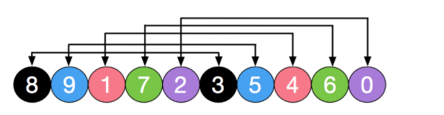

冒泡排序
- 稳定排序
- 相邻比较交换, 大数移动到后面
void bubbleSort(vector<int> arr) {
int temp = 0;
for (int i = arr.size() - 1; i > 0; i--) { // 每次需要排序的长度
for (int j = 0; j < i; j++) { // 从第一个元素到第i个元素
if (arr[j] > arr[j + 1]) { // 相邻交换, 大数冒泡到后面
temp = arr[j];
arr[j] = arr[j + 1];
arr[j + 1] = temp;
}
}//loop j
}//loop i
}
/// 优化版本
void bubbleSort(vector<int> arr) {
int temp = 0;
bool swap;
for (int i = arr.size() - 1; i > 0; i--) { // 每次需要排序的长度
swap=false;
for (int j = 0; j < i; j++) { // 从第一个元素到第i个元素
if (arr[j] > arr[j + 1]) {
temp = arr[j];
arr[j] = arr[j + 1];
arr[j + 1] = temp;
swap=true;
}
}//loop j
if (swap==false){
break;
}
}//loop i
}选择排序
- 基本思路是, 在未排序序列中找到最小元素，存放已经排序序列的末尾
- 用数组实现的选择排序是不稳定的，用链表实现的选择排序是稳定的。
void selectionSort(vector<int> arr) {
int temp, min = 0;
for (int i = 0; i < arr.size() - 1; i++) {
min = i;
// 循环查找最小值(有可能前面被后面交换过去, 因此不稳定)
for (int j = i + 1; j < arr.length; j++) {
if (arr[min] > arr[j]) {
min = j;
}
}
/// 将min和i位置元素进行交换
if (min != i) {
temp = arr[i];
arr[i] = arr[min];
arr[min] = temp;
}
}
}插入排序
- 对于未排序数据，在已排序序列中从后向前扫描，找到相应位置并插入。
- 稳定排序
void insertionSort(vector<int>& arr){
for (int i=1; i<arr.size(); ++i){
int value = arr[i];
int position=i;
/// position value插入到合适位置
/// 直到arr[position-1]<value才是位置
while (position>0 && arr[position-1]>value){
arr[position] = arr[position-1];
position--;
}
arr[position] = value;
}//loop i
}归并排序
- 稳定排序
- 需要辅助空间
void mergeSort(vector<int> arr){
vector<int> temp(arr.size(), 0);
internalMergeSort(arr, temp, 0, arr.size()-1);
}
void internalMergeSort(vector<int>& arr, vector<int>& temp, int left, int right){
/// 递归是一个入栈出栈的过程
//当left==right的时，已经不需要再划分了
if (left >= right)
return;
int middle = (left+right)/2;
internalMergeSort(arr, temp, left, middle); //左子数组
internalMergeSort(arr, temp, middle+1, right); //右子数组
mergeSortedArray(arr, temp, left, middle, right); //合并两个子数组
}
// 合并两个有序子序列
private static void mergeSortedArray(vector<int>& arr, vector<int>& temp, int left, int middle, int right){
int i=left;
int j=middle+1;
int k=0;
/// i从left, j从mid+1开始遍历, 放入到temp数组中
while (i<=middle && j<=right){
temp[k++] = arr[i] <= arr[j] ? arr[i++] : arr[j++];
}
/// 对多余的i或者j
while (i <=middle){
temp[k++] = arr[i++];
}
while ( j<=right){
temp[k++] = arr[j++];
}
//把数据复制回原数组
for (i=0; i<k; ++i){
arr[left+i] = temp[i];
}
}快速排序
- 不是稳定排序
void quickSort(vector<int> arr){
qsort(arr, 0, arr.size()-1);
}
void qsort(vector<int>& arr, int low, int high){
if (low >= high)
return;
/// 划分, 以pivot为界, 左侧小于arr[pivot], 右侧大于arr[prvot]
int pivot = partition(arr, low, high); //将数组分为两部分
qsort(arr, low, pivot-1); //递归排序左子数组
qsort(arr, pivot+1, high); //递归排序右子数组
}
int partition(vector<int>& arr, int low, int high){
int pivot = arr[low]; //基准
while (low < high){
while (low < high && arr[high] >= pivot) --high;
arr[low]=arr[high]; //右侧比基准大的记录到左端
while (low < high && arr[low] <= pivot) ++low;
arr[high] = arr[low]; //左侧比基准小的记录到右端
}
arr[low] = pivot;
//返回的是基准的位置
return low;
}堆排序
- 最大堆中，父节点的值比每一个子节点的值都要大。在最小堆中，父节点的值比每一个子节点的值都要小
- 不稳定排序
- 基本步骤, 根据已有元素建堆, 每次交换堆首和堆尾元素, 调整堆, 循环之。
class ArrayHeap {
public:
vector<int> arr;
ArrayHeap(vector<int>& arr) {
this->arr = arr;
}
int getParentIndex(int child) {
return (child - 1) / 2;
}
int getLeftChildIndex(int parent) {
return 2 * parent + 1;
}
void swap(int i, int j) {
int temp = arr[i];
arr[i] = arr[j];
arr[j] = temp;
}
/// 从i索引开始调整堆
void adjustHeap(int i, int len) {
int left, right, j;
/// 找到i的左孩子
left = getLeftChildIndex(i);
while (left <= len) {
right = left + 1;
j = left;
/// 左孩子和右孩子哪个大
if (j < len && arr[left] < arr[right]) {
j++;
}
/// 交换父节点i和子节点j位置
/// 更新i, left看是否继续循环
/// 注意由于是从下到上遍历, 如果出现某节点父亲大于子节点, 则后续均有父节点大于子节点, 直接break即可
if (arr[i] < arr[j]) {
swap(array, i, j);
i = j;
left = getLeftChildIndex(i);
} else {
break; // 停止筛选
}
}
}
/**
* 堆排序。
* */
void sort() {
int last = arr.size() - 1;
// 初始化最大堆
/// 从last的父亲开始调整堆
for (int i = getParentIndex(last); i >= 0; --i) {
adjustHeap(i, last);
}
// 堆调整
while (last >= 0) {
swap(0, last--);
/// 调整
adjustHeap(0, last);
}
}
}希尔排序
- 插入排序改良版, 插入排序算法在数组基本有序的情况下，可以近似达到O(n)复杂度
- 插入排序每次只能将数据移动一位，在数组较大且基本无序的情况下性能会迅速恶化。
- 不稳定排序
选择一个增量序列t1，t2，…，tk，其中ti>tj，tk=1；
每趟排序，根据对应的增量ti，将待排序列分割成若干长度为m 的子序列，分别对各子序列进行直接插入排序。同时不断降低增量序列。

void shellSort(vector<int>& arr){
int temp;
/// delta增量序列呈对数减少
for (int delta = arr.size()/2; delta>=1; delta/=2){ //delta为增量对每个增量进行一次排序
/// i从delta开始,直到arr.size(), 显然delta越小i移动越多
for (int i=delta; i<arr.size(); i++){
/// j从i开始, 与j-delta比较，如果小于则交换之, 如果大于则退出循环
for (int j=i; j>=delta && arr[j]<arr[j-delta]; j-=delta){ //注意每个地方增量和差值都是delta
temp = arr[j-delta];
arr[j-delta] = arr[j];
arr[j] = temp;
}
}//loop i
}//loop delta
}计数排序
- 计数排序不是基于比较的排序算法，其核心在于将输入的数据值转化为键存储在额外开辟的数组空间中。
void countSort(vector<int> a, int max, int min) {
vector<int> b(a);//存储数组
vector<int> count(max - min + 1, 0);//计数数组
for (int i = 0; i < a.length; i++) {
int num = a[i];
count[num - min]++;//每出现一个值，计数数组对应元素的值+1
}
for (int num = min + 1; num <= max; num++) {
//加总数组元素的值为计数数组对应元素及左边所有元素的值的总和
count[num - min] += sum[num - min - 1]
}
for (int i = 0; i < a.length; i++) {
int num = a[i];//源数组第i位的值
int index = count[num - min] - 1;//加总数组中对应元素的下标
b[index] = num;//将该值存入存储数组对应下标中
count[num - min]--;//加总数组中，该值的总和减少1。
}
//将存储数组的值一一替换给源数组
for(int i=0;i<a.length;i++){
a[i] = b[i];
}
}桶排序
基数排序